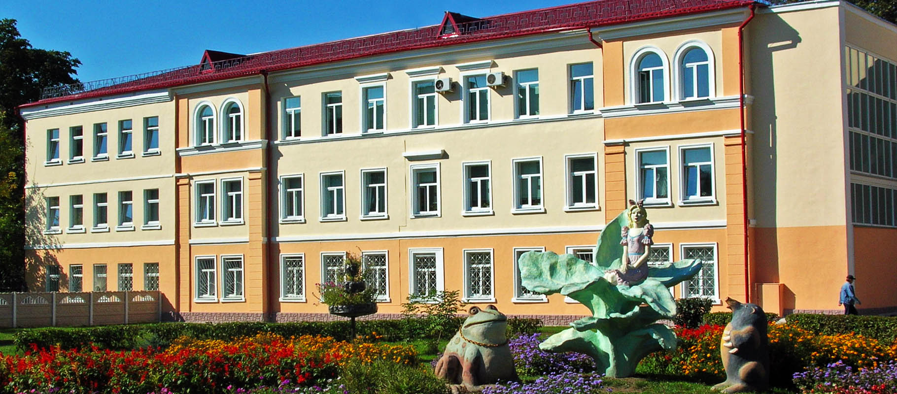

Историческая справка
Среднее сельскохозяйственное учебное заведение в г.Гомеле, на базе которого в последствии организован сельскохозяйственный техникум, образованно в ноябре 1947 года. Занятия начались с 1 января 1948 года. Это была Государственная сельскохозяйственная школа по подготовке руководящих кадров колхозов с контингентом обучающихся 300 человек. Выпускникам школы присваивалась квалификация техника – организатора сельскохозяйственного производства.
Городом для школы были выделены помещения по улице Пролетарская, 39 для учебных занятий и по улице Советская, 32 под общежитие учащихся. Среднее сельскохозяйственное учебное заведение в г. Гомеле, на базе которого в последствии организован сельскохозяйственный техникум, образованно в ноябре 1947 года. Занятия начались с 1 января 1948 года. Это была Государственная сельскохозяйственная школа по подготовке руководящих кадров колхозов с контингентом обучающихся 300 человек. Выпускникам школы присваивалась квалификация техника-организатора сельскохозяйственного производства.Одновременно организовано и учебно-опытное хозяйство на территории совхоза «Титенки» Гомельского района в соответствии с типовым оборудованием, утвержденным союзным правительством (около 200 га сельскохозяйственных угодий, сад, огород, рабочие лошади, коровы, свиньи, птица, производственные, обслуживающие и жилые помещения, необходимый инвентарь).
На фотографии первый выпуск специалистов школы руководящих кадров. В первом ряду преподаватели школы.
В школу подбирались и направлялись по путёвкам райисполкомов председатели колхозов, бригадиры и другие работники со стажем работы не менее трех лет и зарекомендовавшие себя на руководящей работе. Учащимся школы выплачивалась стипендия в сумме 200 рублей и предоставлялось бесплатно общежитие.
Школой подготовлено около тысячи организаторов сельскохозяйственного производства.
В мае 1951 года в соответствии с постановлением Совета Министров СССР Гомельская Государственная двухгодичная школа по подготовке руководящих кадров колхозов реорганизована в среднюю сельскохозяйственную школу по подготовке председателей колхозов с трехлетним сроком обучения и планом приема 70 человек. Выпускникам присваивалась квалификация младшего агронома. Часть из них направлялась на руководящую работу в колхозы, остальные на должности специалистов сельского хозяйства.
Школой подготовлено более 250 младших агрономов.
Параллельно велась курсовая переподготовка руководящих кадров колхозов области.
Повышение статуса
В июле 1956 года во исполнение постановления Совета Министров БССР о более полном удовлетворении сельского хозяйства специалистами и улучшении качества их подготовки, министерство сельского хозяйства Республики провело реорганизацию сети учебных заведений.
Гомельская средняя сельскохозяйственная школа по подготовке председателей колхозов преобразована в Гомельский сельскохозяйственный техникум агрономического профиля с планом приема учащихся 120 человек.
В июле 1960 года Министерство сельского хозяйства БССР в соответствии с Постановлением ЦККПБ и СМ. БССР провело новую реорганизацию сети средних специальных сельскохозяйственных учебных заведений республики. Профиль Гомельского техникума изменен с агрономического на экономический.
История Гомельского техникума экономического профиля в определенной мере связана с историей Чечерского техникума, который был организован 1954 году на базе Чечерской одногодичной школы по подготовке счетоводов для колхозов и совхозов. Директором Чечерского техникума был Якубов И.И., который с июля 1960 года возглавил Гомельский сельскохозяйственный техникум.
<-- Директор техникума
Якубов И.И.
С 1960 года Гомельский сельскохозяйственный техникум ведет подготовку бухгалтеров по дневной и заочной формам обучения.
В 1960-1975 г.г. техникум также готовил бухгалтеров–плановиков и техников–плановиков, а в 1977-1982 г.г. техников-организаторов (делопроизводителей).

С 1988г. по 2002г. года велась подготовка юристов, в том числе без отрыва от производства с 1990 года.
В 1995 году открыта новая специальность «Экономика и управление предприятием АПК» с квалификацией «экономист».
С 1978г. по 2002г. при техникуме работали курсы повышения квалификации счетных работников колхозов и совхозов области.
Последняя Реорганизация
 В 2002 году учреждение образования "Гомельский государственный сельскохозяйственный техникум" реорганизовано в учреждение образования "Гомельский государственный аграрно-экономический колледж".
В 2002 году учреждение образования "Гомельский государственный сельскохозяйственный техникум" реорганизовано в учреждение образования "Гомельский государственный аграрно-экономический колледж".
Сегодня учреждение образования "Гомельский государственный аграрно-экономический колледж" - это учебное заведение с полувековыми традициями, коллектив которого по праву может шиться успехами в сфере Подготовки предприятии агропромышленного комплекса нашей республики. В колледже обучается 600 учащихся на дневной форме обучения и около 180 на заочной.

Главной задачей педагогического коллектива колледжа является подготовка конкурентоспособных, практико-ориентированных специалистов, востребованных на рынке труда.
За период существования учебного заведения подготовлено более 20 тысяч специалистов со средним образованием. Выпускники колледжа работают на различных предприятиях агропромышленного комплекса Гомельской области и за ее пределами. Среди них - руководители предприятий и организаций, главные бухгалтера, экономисты, программисты, операторы автоматизированных установок, научные работники и преподаватели.
Колледж имеет типовое общежитие на 400 мест, в котором созданы условия для проживания, отдыха и подготовки учащихся к занятиям. На базе общежития работает компьютерный класс и тренажерный зал. Рядом находится крупный торговый центр, гипермаркет, рынок, центральный парк отдыха; авто и железнодорожные вокзалы.
В колледже ведётся подготовка кадров для предприятий АПК:
на дневном отделении по трем специальностям:
«Бухгалтерский учет, анализ и контроль»
«Программное обеспечение информационных технологий»
«Экономика и организация производства»
На заочном отделении по специальности:
«Бухгалтерский учет, анализ и контроль»
Актуальную информацию о сроках обучения, проходных баллах и др. можно посмотреть на официальном сайте нашего колледжа.